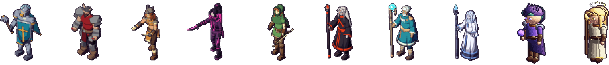
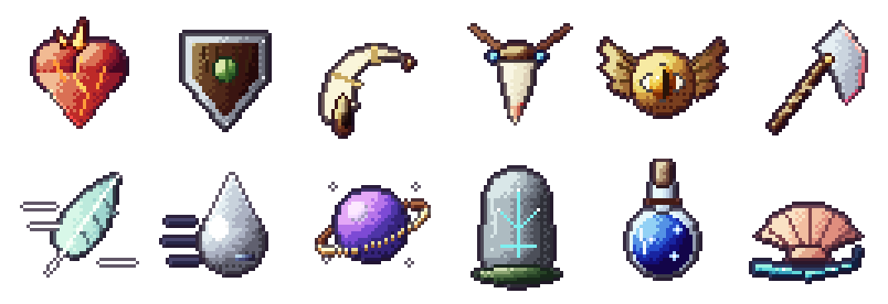

Devlog #9: A name, new looks and twelve relics
Three busy days. The game has its real name, eight heroes were rebuilt from scratch, the relic pool doubled, and there is now an account, a launcher and an installer between you and a match.
It's called Altarhold
The working titles are gone. The game is Altarhold, after the relic arenas at the heart of every match. "Project Altar" stays as the name of the arena itself. The new logo is a bronze shield holding an altar with a floating violet relic, cut in the same bronze and wood as the HUD. It's on the main menu, the window, the launcher and the app icon.
Eight heroes rebuilt

Heroes are now modelled and animated in 3D, then baked into pixel-art sprites in all eight directions. That keeps every frame consistent and makes new animations cheap, so each hero now has a separate cast animation for every skill instead of one shared cast. Their skill effects were redrawn as pixel art to match: fire, stone, frost, water and arrows that look like they belong in the same world as the sprites.
Bastion Grael, Orin Ash, Kira Vex, Haldor Quakeborn, Lyra Thorn, Rhea Ironfang, Maro Tidecaller and Nyra Frostweave are done.
Six new relics

The arena prize pool doubled. The six new relics are Giant's Horn, Wolf Fang, Gale Feather, Quicksilver Drop, Starwell Phial and Tidal Shell, adding more health, damage, speed, mana and regeneration to fight over. Each of the twelve has its own painted icon, shown floating over the open arena, in your HUD's relic sockets and on the ground when one is dropped.
Accounts and ratings
You now sign in with an Altarhold account, which you can also create on the website. Your account keeps your match history and a skill rating that moves after every online match, so later we can match you with players near your level.
A launcher and an installer
Alpha testers now get a Windows installer with desktop and Start menu shortcuts. It installs a launcher that downloads the game, keeps it up to date and shows the patch notes for each new build, so nobody has to download zips by hand again.
Smaller things
- Collisions work like they should: heroes and minions block each other, but nobody shoves anybody out of the way.
- Experience from a kill floats up over the body, so you can see what each kill was worth.
- Richer combat and event sounds, plus new announcer calls.
- Hero select now fits any window size.
Next
Rebuilding Juno and Sela, and matchmaking, so finding a game is one button.
Proof of date
git commit 04995053663524c8f649d78c78bedf5f91fb2bbd